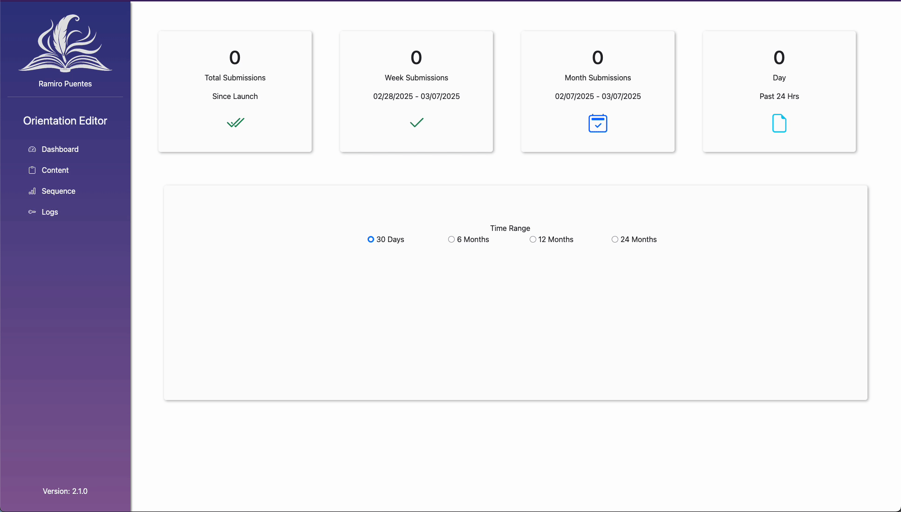

CASE STUDY
Orientation Admin Dashboard

Project Overview
The IT Admin Dashboard for Orientation Updates is a web-based administrative tool designed to streamline the process of managing and updating the Orientation quiz for students. Built with a user-friendly interface, this dashboard enables IT staff to efficiently create, edit, and publish quiz content, ensuring that students receive the most up-to-date information throughout their orientation process.
As the developer, designer, and graphic artist, I led the end-to-end creation of this project, designing both the backend architecture and front-end interface while also crafting all visual assets and UI components. The result is a scalable, secure, and intuitive platform that enhances content management and student engagement.
| Tech Stack | .NET Core, SQL Server, JavaScript, Bootstrap |
|---|---|
| Project Type | Full-stack web app |
| Role | Lead Developer, UX Designer |
| Completion Date | Jan 2025 |

Related Project
This project is closely connected to the Orientation Web Application. While the Orientation project provides students with a structured onboarding experience, the Orientation Admin Dashboard enables IT staff to manage and update the quiz efficiently.
View Orientation Project
Key Features
- Admin Quiz Management: Easily create, edit, and update quiz content in real-time.
- User Roles & Permissions: Secure authentication system allowing only authorized IT staff to make modifications.
- Custom Graphics & UI Design : Created all visual assets, including illustrations, icons, and banners, ensuring a polished and engaging user interface.
- Real-Time Updates: Instant publishing of orientation quiz changes to ensure students access the latest content.
- Mobile-Friendly & Accessible: Fully responsive design with WCAG-compliant accessibility enhancements.
- Performance & Security Optimized: Built with efficient backend logic and authentication mechanisms for seamless content updates.

Project Gallery



Design & Development Insights
Designing for Both IT Staff & Student Impact
Solution: I focused on creating a user-friendly interface that allows IT staff to efficiently manage quiz content while ensuring updates are instantly reflected in the student-facing orientation quiz. This streamlined workflow minimizes errors and enhances the overall student experience.
Balancing Functionality with Simplicity
Solution: Instead of overcomplicating the dashboard, I designed a minimalist, intuitive UI with clear navigation. This ensures that IT personnel can post updates without requiring technical expertise, making content management quick and hassle-free.
Ensuring a Smooth Workflow for Content Updates
Solution: To enhance efficiency, I implemented a real-time update mechanism that allows IT staff to preview and publish quiz modifications immediately. This removes the need for manual refreshes or system restarts, improving the responsiveness of the platform.
Making the Project Fun & Engaging to Work On
Solution: Since I had complete control over development, UI/UX design, and graphics, I leveraged modern UI trends, interactive elements, and custom visual assets to create a polished and engaging admin dashboard. This creative freedom made the development process both enjoyable and highly effective.

Lessons Learned & Future Improvements
Refining Full-Stack Development Workflow
Since I handled both development and design, I streamlined my approach to balancing backend logic with UI/UX considerations for a seamless experience.
Enhancing UI/UX Best Practices
This project reinforced the importance of design consistency, accessibility, and user-centric layouts, ensuring IT staff could easily navigate the admin dashboard.
Optimizing Content Management for IT Staff
Designing a custom admin dashboard taught me how to simplify workflows for non-technical users while maintaining backend flexibility for future updates.
Improved Graphic & UI Design Efficiency
Handling all visual assets and UI components gave me the opportunity to refine my design workflow, from wireframing to final implementation, making future projects faster and more polished.
Future Improvement: Expanding Role-Based Permissions
While the dashboard is functional, a future enhancement could include granular user roles with different access levels for content updates, offering more security and control.
EXPLORE MORE
Continue through the portfolio.
Browse the complete project collection, or reach out if you would like to discuss the engineering and design decisions behind this work.